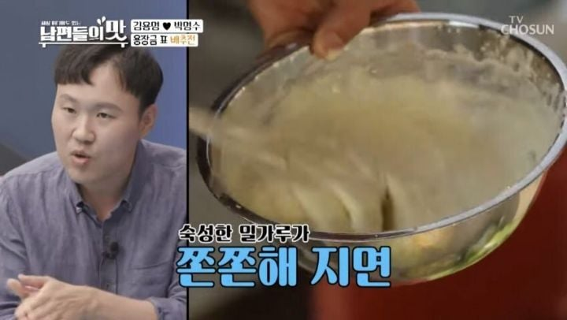
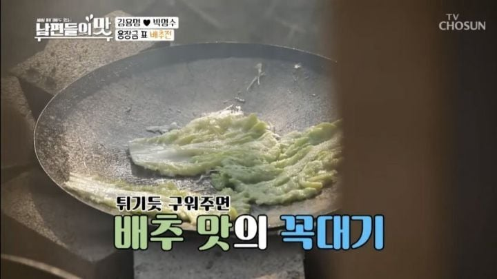
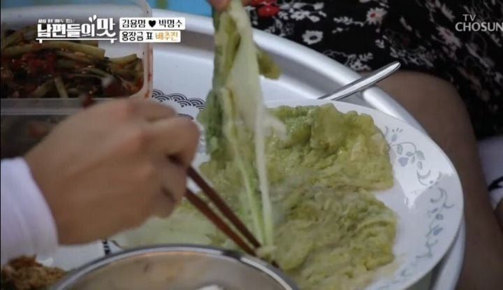

띠용



띠용
뭔가 왜 맛있는지 모르겠는데 맛있음
난 별로던데 내가 맛있는곳을 못가봤나
이거랑 막걸리랑 먹으면 진짜 끝도없이들어간다ㅋㅋㅋㅋ배추전 싱겁게하고 고추썰어넣은 간장 콤보임
초장이랑도 먹어보셈!!!!!
니 설마 회도 초장이랑 묵나?
.. 그렇다면? ㅋㅋㅋㅋ 완전 많이 찍는데.. ㅋㅋ
나도 비린거 잘 못먹어서 초장이나 와사비 많이푼 간장에 찍어먹음
배추전에 초장은 처음들어보는 조합
속는셈 치고 ㄱㄱ
자네 전라도 사람인가?
초장이 신이다
족발 순대 삼겹살 전 싹다 초장임
배추 익은김치 아니면 쌈으로도 안먹는데 배추전은 개맛있음
이건 ㄹㅇ 반죽 맛에 배추 식감에 말이 안됨 그냥
사먹어본 적이 없고 어머니가 해준 것만 먹어봤는데
맛난 배추로 만들면
진짜 달달한데
간장 살짝 찍어먹으면 단맛이 더 쫙 올라가지
거기서 흘러나오는 채수가 장난 없음
달달하고 고소한게 개꿀맛임
액젓을 넣기도하네
배추전 들기름에 지져야 제 맛임 ㄹㅇ
해물파전 다음으로 맛있는 전 같음
이거 간장발사대야 ㅋㅋㅋㅋㅋㅋㅋ
ㅅㅂ 표현봐 ㅋㅋㅋㅋㅋㅋ
근데 초간장해서 새콤 달콤 짭짤 고소 이거 못막긴함 ㅋㅋㅋ
배추가 그냥 식재료 상위 티어임. 뭔 요리에 넣어도 맛있음.
거기에 제철 배추는 생으로 뜯어 먹어도 단맛이 난다고
ㅇㄱㄹㅇ 괜히 김치를 배추로 담그는게 아님 ㅋㅋ 국물내도 맛있고 생으로도 맛있고 발효시켜도 맛있고. 개들도 배추 생으로 주면 잘먹으니 말 다했지
배추전 맛있긴해도 매번 물렁한 부분이 아쉬웠었는데 저번에 한번 바삭하게 부쳐먹었더니 그 맛을 못 잊겠더라 요번 추석만 기다리는중
기냥 간장도 좋은데 그 양파 간장에 절인거 전집서 주는 간장이랑 하면 극락임
간장에 땡초 마늘 다진거 넣고 맛술 찔끔 깨가루 약간해서 먹으면 맛남
반죽이 겉에는 바삭 뚫고 들어가면 살짝 탱글하면서 배추 아삭함이 적당히 살아있어가지고 아삭하면서 단맛 쭉 배어나오고 양념 짠맛 밸런스 삭 잡아주면 레전드지
초겨울에 가족들 모여서 배추전 구워먹으면 진짜 맛있음 막걸리랑 버섯전은 덤
하 ㅅㅂ 여기도 서울 촌놈 모르게 지들만 맛난거 먹구 있었네.. 강아지 아기들 ㅠㅠ
goat
단순한데 ㅈㄴ 맛있음
개맛있음
맛있음
줄기 부분은 달큰하고
잎부분은 쫀득하니 좋음
박명수 진짜 맛있나보다
눈 땡그래졌는데 입은 쉬지않아 ㅋㅋㅋㅋㅋ
박명수는 배추전을 처음 먹어본다고?? 신기하네..
별로 김치전 해물파전이 젤 좋아
나도 30 중반에 첨 먹어봄.. 시발 이딴걸 왜 돈주고사먹어 하다가 ㅈㄴ 맛있어서 놀람ㅋㅋㅋㅋ
팽이버섯 튀김 먹어봤냐? ㅈㄴ맛있더라
배추전이 해먹기도 편하고 맛있음 배추 자체 단맛이 ㅈㄴ 강해서 반죽만 대충 해도 맛있게 나옴
난 바삭한것만 좋아
초장찍어 먹어야지
엄마 고향에 따라 자주 먹는 집은 토속음식인줄 잘 모르는 사람들도 있음
잘 부치면 겉은 바삭 속엔 채즙이 녹진하게 터져서 개맛도리임
배추 뜯어서 깨끗하게 씻고
전분에 소금 살짝 넣어서 반죽 만들고 부쳐 놓으면 배추 수분이 전분에 흡수되면서 쫄깃해짐
그거 맛간장 만들어서 찍어먹으면 맛있음
부침가루로 하는게 맛은 더 있는데 식감은 전분이 나음
배추 속 살짝 절여서 하라는 사람도 있던데 난 그냥 생배추가 나은거 같았음
비슷한걸로 같은 반죽에 팽이버섯 납작하게 눌러서 펴고 튀겨먹어도 맛있음 소스는 마요+진간장+와사비나 청양고추 추천함
진미채 중가루 라고 파는거 있음 그거 계란에 섞어서 전부쳐도 맛있음 그건 아무것도 안찍어 먹는게 정배임
난 안먹어 봤는데 조미오징어라고 예전에 전기구이? 비슷하게 포장해서 팔던거 있는데
그것도 계란옷 입혀서 먹는다고 함 청양 고추 잘게 썰어서 계란에 같이 넣어서 한다던데....
마트에서 조미오징어를 본지가 오래돼서 해먹어 볼 생각은 안해봤음 어쨌든 그거 만들어서 청양고추+마요네즈 에 찍어먹으면 맛있다고 함
감자전분? 옥수수전분?
고기보다 맛있는전
밀가루풀이 덜묻을수록 맛있음
추석때 전꾸우면 전꿉는사람 맥주마시는용으로 한두장 부쳤는데
고추장에 딱 찍어서
채소가 구워지면 달아져 보통
김용명 뭐냐 요리도 잘하냐
잘하는 집 가서 먹어야함. 난 어릴때부터 맛 없는 버전만 먹다보니 이거 싫더라